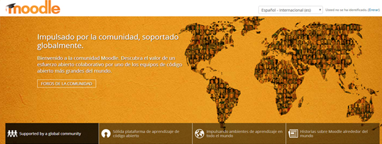
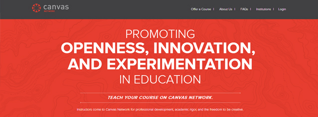
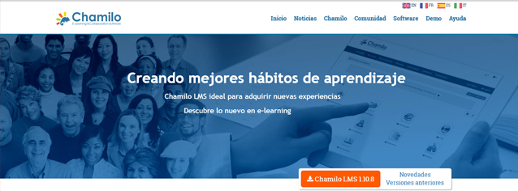
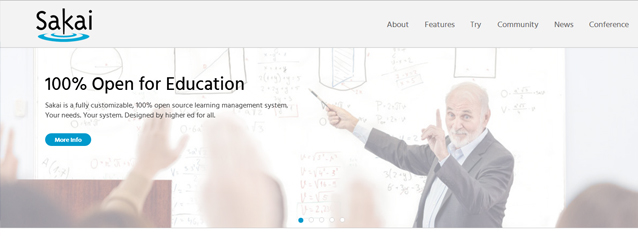
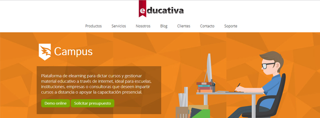

En esta sección encontrarás las mejores plataformas E-Learning con código abierto.
Moodle
En primer lugar, hay que hablar de Moodle, la plataforma de LMS con código abierto más conocida y utilizada. Se trata de la plataforma con más prestigio a nivel mundial, siendo escogida tanto por universidades como por centros de formación o empresas.
El número de usuarios de Moodle a nivel mundial alcanza al día de hoy los 79 millones de usuarios, dato más que suficiente para justificar que sea una de las plataformas e-learning con más fama a nivel mundial.
La mayor ventaja de Moodle es su interfaz sencilla que hace de esta plataforma un sistema de fácil aprendizaje, tanto para docentes como para alumnos.

Canvas LMS
Lo que diferencia a Canvas de otros LMS de código abierto es que este funciona 100% en la nube, es decir, no hace falta alojarlo en ningún servidor.
Canvas funciona de una forma muy visual e intuitiva. También tiene su versión Canvas Network, más enfocada hacia el sector empresarial.

Chamilo LMS
En la web de Chamilo, ellos mismos destacan la cantidad de empresas que usan su plataforma para la formación. El proyecto Chamilo, nace en 2010 de la mano de la homónima asociación sin fines de lucro.
A pesar de su corta vida, Chamilo está presente en más del 80% de los países del mundo, con el fin de acercar la educación a países en vías de desarrollo.
Chamilo es una plataforma E-Learning que, al igual que Moodle, también dispone de una interfaz sencilla y fácil de usar.

Sakai
Sakai es una plataforma LMS, que surge del Proyecto Sakai, creado entre varias universidades americanas, con el fin de ofrecer otra alternativa de plataforma E-Learning con código abierto como Moodle.
Al día de hoy ya lo usan más de 100 universidades, algunas de ellas españolas, como la Universidad Complutense de Madrid o la Politécnica de Valencia.

eDucativa
En eDucativa, ofrecen una plataforma sencilla para gestionar cursos a través de internet. Sus servicios los utilizan todo tipo de empresas e instituciones, no sólo escuelas y universidades.
Se trata de una alternativa de LMS comercial bastante accesible. La web está en español y tienen su soporte de atención en España, lo cual resulta muy ventajoso para cualquier consulta o duda que pueda surgir al respecto.

Google Classroom
Existe una alternativa a estas plataformas E-Learning que trabaja en la nube, es Google Classroom.
Está dentro de G Suite for Education, es gratuita y la pueden usar centros de formación, usuarios particulares que posean cuentas de Gmail u organizaciones sin fines de lucro.
Se diferencian cuatro perfiles en Classroom: profesores, alumnos, tutores y administradores cada uno con diferentes permisos o tipos de funciones. Por ejemplo el profesor puede crear y gestionar clases, tareas y notas y los tutores recibir un resumen del trabajo de los alumnos por correo electrónico.
Se puede usar en la versión web, siendo compatible con los principales navegadores o mediante las aplicaciones móviles para Android e IOS